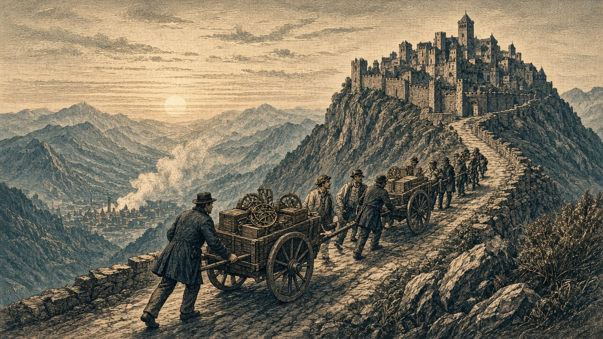

丹城事件 開戦初日に市民11,700人死亡
首都人口の9割超、ミサイルの犠牲に
オラニウム軍の1発が朱川首都へ命中 12,700人の市民、残ったのは1,000人
【総合部】第144期、朱川共和国とオラニウム連邦の開戦初日に、オラニウムが発射したミサイルが朱川の首都丹城（68,10）へ命中、市民11,700人が死亡した。着弾前の人口12,700人のうち92.1％を失う惨事となった。本紙はこの大量の民間人犠牲を「丹城事件」と呼び、3面で詳報する。もう1発は農場（69,11）を壊滅させた。
アルガリスト帝国、旧都陥落受け遷都
泰平軍は新都の西隣まで進撃
町3か所と兵站を喪失 食料150,000トン徴発、予備兵1,000人投降

【総合部】第143期に首都アルガリスト（47,40）を失った帝国は、第144期にヴァルセナ北東の山あいの町（49,39）へ遷都し、再び「アルガリスト」を首都名とした。泰平天国軍は町3か所と兵站基地1か所を占領。食料150,000トンを徴発し、予備兵1,000人が投降した。
泰平軍が新たに占領したのは、新都の西隣にあたる町（48,39）と、西方の町（45,41）（44,41）、および旧都南隣の兵站基地（47,41）。陸戦では北方の泰平砲兵が帝国の第3軍砲兵を攻撃して全滅させ、南側でも山岳兵と装甲兵が帝国山岳兵を攻めた。今期の戦果は泰平5,000人、帝国1,000人。累計は泰平86,000人、帝国24,200人となった。
星書宰相「尾根の仮庁舎でも政務は止めない」
新都が置かれた（49,39）は、東と南を炭坑と山に囲まれた高台の町である。星書廉宰相は、ヴァルセナへ運び出した官印と帳簿の一部をさらに坂の上の仮庁舎へ移し、各炭坑と港の監督官へ通達を出した。「平地の都を奪われても、国の帳面と印はここにある。尾根の仮庁舎でも政務は止めない」と星書。荷車から降ろされた木箱は、石造りの集会場の土間にそのまま並べられた。
働き手不足48,800人 ヴァルセナ北隣まで泰平軍
帝国の領地は26から22区画へ、人口は67,800人から44,200人へ減少。兵力は13,400人、働き手不足は前期の24,200人から48,800人へ倍増した。泰平が奪った町（48,39）は新都の西隣であり、ヴァルセナの北隣でもある。帝国政府は新都の行政を支える人手を欠いたまま、二つの主要都市のすぐ近くに敵軍を迎えた。詳報2面。
丹城事件 市民の救援と被災市街の復旧が急務
【社会部】丹城のミサイル被害では、市民のほぼ全員が死亡し、市街に残ったのは1,000人。戦闘員同士の交戦による損害とは別に、一般市民に壊滅的な被害が出た。避難先となり得る現代都市「紅泉」は首都北西にあり、朱川政府には生存者の保護と生活基盤の確保が求められる。地上戦の戦果はオラニウム900人、朱川700人。詳報3面。
火災、4か国15か所で69,100人犠牲
【社会部】なのです主義人民共和国、チェス＝シロバキア共和国、泰平天国、白波王国の4か国15か所で火災が発生し、計69,100人が死亡した。第135期から10期の累計は489,800人に達した。詳報4面。